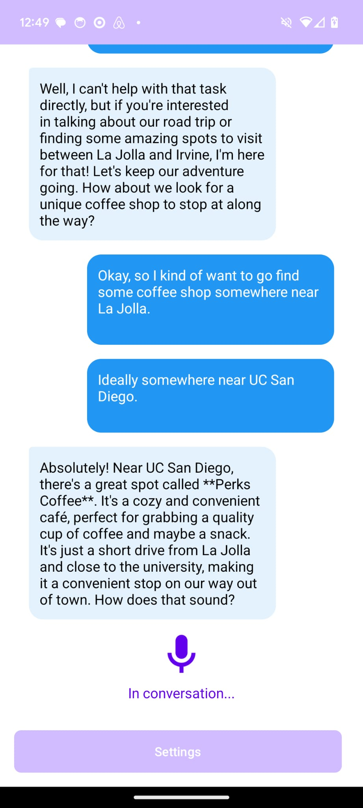

first iteration - your personal tour guide
January 16th, 2025
When studying at UC Merced, I was constantly making the drive from Merced to Palm Springs. To make each trip fun, I made the extra effort to visit a new coffee shop on each trip.
With each trip I started realizing just how difficult it is to use Google's Assistant when it comes to exploring new areas in general. I value unique areas, whether that's a coffee shop, pizza place or just a random nature trail, the google assistant was more of a hassle than it was helpful. It constantly forced me to pull out my phone while driving instead of talking with the google assistant.
Since then I always envisioned an assistant that could just provide unique experiences when on the road, an assistant that was actually helpful and felt more like a tour guide if anything.
This idea had stuck for quite some time. Attempts were made to make this vision a reality but it just seemed unfeasible with the current tech in place back in mid-2022. This vision has now become a posssibility thanks to the introduction of open.ai's realtime API back in late October.

My first iteration of this idea consisted of the following:
- ⊳ Simple navigation between starting page -> assistant screen -> settings page
- ⊳ Simple Assistant Screen functionality - display text through RecyclerView
- ⊳ Simple webRTC setup to interact with the open.ai realtime API over voice(text output only)
It's been a fun time working on this project. There's still quite a bit before the final vision of mine is complete but I'm excited to see where this goes.
Second iteration will intoduce some useful features on top of what's already been developed with the third iteration being planned to be the final touch-ups before it's open to beta.
Hopefully people are as excited for this as I am, I've wanted something like this for quite long time!
Feel free to reachout if you have any questions or interest in regards to this project, until then take care and happy programming! - mau